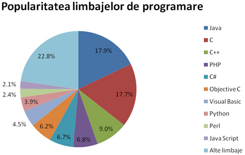

Contact
Proiect pentru certificarea competențelor profesionale în înformatică
Colegiul Național "Anastasescu"
Limbaje de programare

Elev: Soare Roxana Florentina
Profesor: Ștefan Cătălina
Clasa: a XII-a B M.I.
Nr.Tel.: 0760760766
E-mail: roxanas@yahoo.com
Vezi și ...
Comparație
Limbajul de programare C++ a fost inițial derivat din C. Totuși, nu absolut orice program scris în C este valid C++. Deoarece C și C++ au evoluat independent, au apărut, din nefericire, o serie de incompatibilități între cele două limbaje de programare.

Cea mai amplă revizie a limbajui C, C99, a creat un număr suplimentar de conflicte. Diferențele fac să fie greu de scris programe și biblioteci care să fie compilate și să ruleze corect în calitate de cod C sau C++, și produce confuzii celor care programează în ambele limbaje. Diferențele fac ca fiecare din cele două limbaje de programare să împrumute din caracteristicile celuilalt limbaj de programare.
Limbaje de programare de viitor
Domeniul IT este unul foarte dinamic, in continua dezvoltare, care ofera numeroase oportunitati de angajare. Pentru a veni in ajutorul tinerilor care isi doresc sa lucreze in domeniul IT, dar si a specialistilor care sunt interesati de evolutia pietei, HiPo.ro a realizat o analiza a tendintelor privind utilizarea diferitelor limbaje de programare.
In prezent, cele mai populare 10 limbaje de programare sunt: Java, C, C++, PHP, C#, Objectiv C, Visual Basic, Python, Perl si Java Script. In graficul de mai jos poti vedea detalii legate de ponderea fiecarui limbaj de programare in ceea ce priveste popularitatea sa in randul specialistilor din domeniul IT din intreaga lume, a locurilor de munca disponibile, precum si a ofertelor de cursuri de specializare.